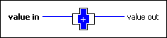

Assert Unsigned Integer Type VI
Owning Palette: Assert Type VIs and Functions
Requires: Base Development System
Breaks the calling VI unless the input data is an unsigned integer numeric type.
This VI does nothing at run time. Use this VI in conjunction with the Type Specialization structure to customize sections of code in a malleable VI (.vim) for unsigned integer numeric types or to force a malleable VI to accept unsigned integer numeric types only.

 Add to the block diagram Add to the block diagram |
 Find on the palette Find on the palette |